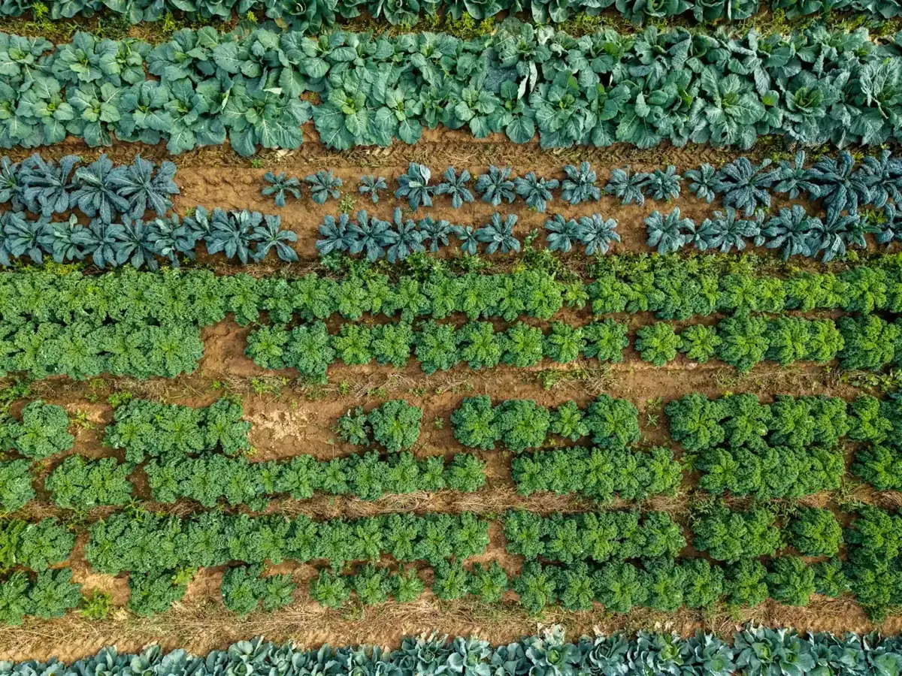
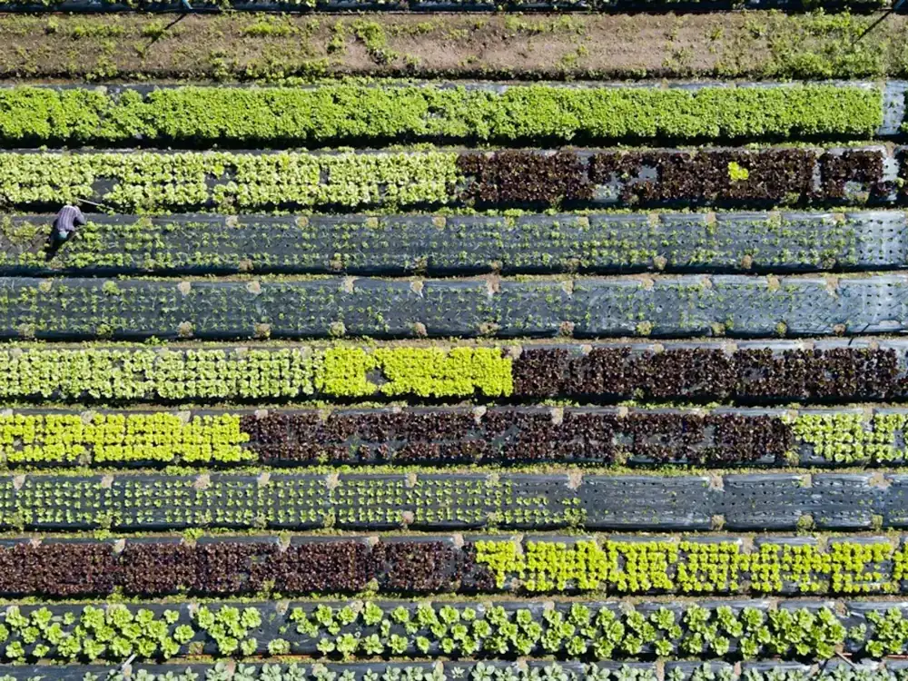
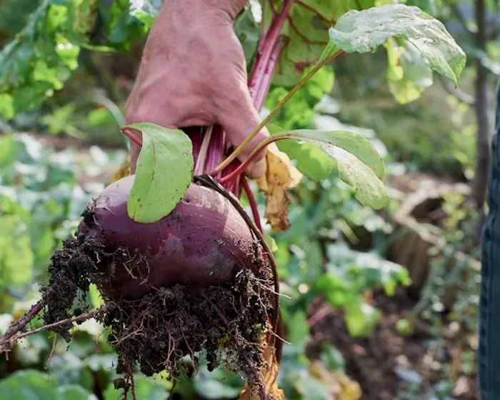
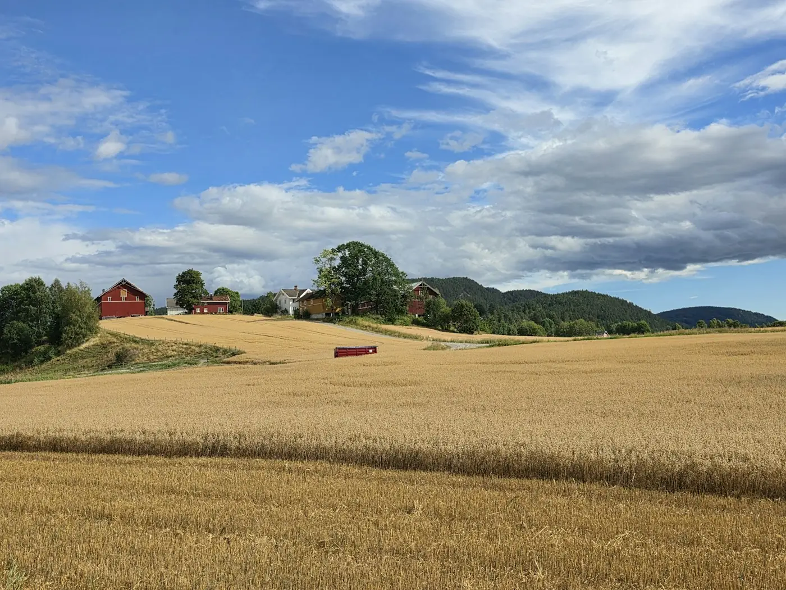

Lag en vekstskifteplan for kjøkkenhagen eller markedshagen din, og lær hvorfor vekstskifte er viktig og hva forskningen sier.
Claude (Sonnet 5.5) leser beskrivelsen av dyrkningsarealene og forklarer planen til slutt. Resten velger du selv, og selve planen lages av faste regler fra en kunnskapsbase med kilder, som du finner under «Lær om vekstskifte». Kunnskapsbasen er et utkast og er ikke gjennomgått av fagfolk ennå.

Beskriv hvor du dyrker, del arealene inn i skifter, trykk på grønnsakene du vil ha og vis hva som sto hvor sist sesong. Du får en plan for en hel runde, der hver gruppe grønnsaker har vært innom alle skiftene, slik at sykdom og skadedyr ikke hoper seg opp i jorda.

For eksempel grønnsaksåker, pallekarmer eller oppbygde bed
Skriv med egne ord hva slags arealer du har, hvor store de er, og gjerne hvor de ligger. Du trenger ikke vite noe om vekstskifte.
Stemmer ikke arealene? Rett navn, type og mål direkte, eller endre beskrivelsen og trykk «Finn arealene» igjen.
Et skifte er en del av arealet der en gruppe grønnsaker står sammen ett år. Neste år flytter gruppen videre til neste skifte. Jo flere skifter, jo lengre tid går det før samme gruppe kommer tilbake. Fire skifter er vanlig i kjøkkenhagen.
Antall skifter betyr ikke at du må dele arealet i like store biter. Skiftene kan være av ulik størrelse. Men det året en gruppe står på det minste skiftet, får du mindre av de grønnsakene.
Står noe fast, som jordbær eller rabarbra, er den delen et eget skifte som ikke flytter. Bare resten går på omgang. En pallekarm eller et oppbygd bed med karm av tre eller metall er som regel ett skifte.
Trykk på grønnsakene du vil ha. De står gruppert etter plantefamilie, fordi grønnsaker i samme familie får de samme sykdommene og må flytte sammen.
Trykk på det som sto i hvert skifte sist sesong. Var arealet ikke delt inn før, velger du det som sto omtrent der. Husker du ikke, lar du det være. Står det noe fast, som jordbær eller rabarbra, holdes skiftet utenfor vekstskiftet.
Planen går en hel runde: hvert år flytter hver gruppe videre, til den har vært innom alle skiftene. Derfor er planen like mange år som du har skifter. Trykk på en rute for å se hvorfor den står der.

Hvorfor er vekstskifte så viktig? Les om sykdommer i jorda, næring, jordliv og hva forskningen sier.
